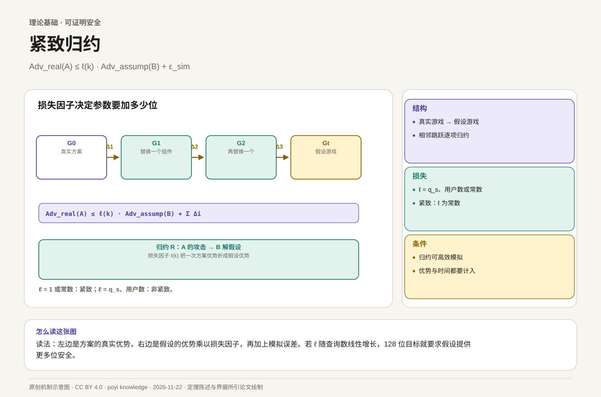
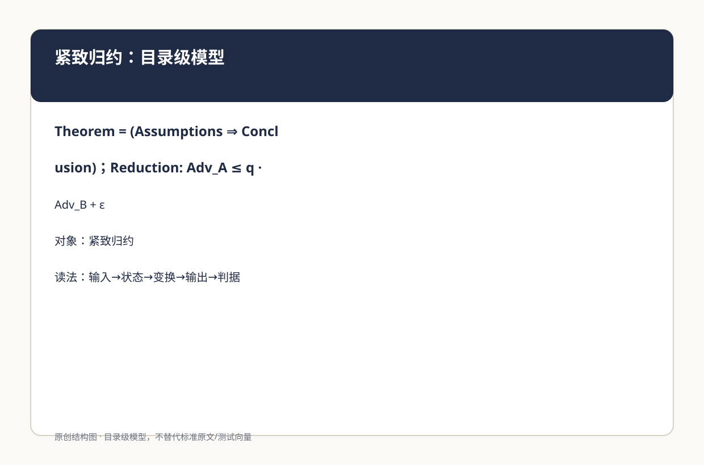

原理与机制
定理：紧致归约（Tight Reduction）。### 归约把“破方案”变成“解假设”
紧致归约不是直接证明方案安全，而是证明：若存在多项式时间敌手 A 以优势 ε 攻破方案，则存在多项式时间算法 B 以优势约 ε/ℓ(k) 解掉底层假设。记模拟误差为 ε_sim，则 Adv_scheme(A) ≤ ℓ(k) · Adv_assump(B) + ε_sim。ℓ(k) 称为损失因子。ℓ=1 或常数时归约是紧致的；ℓ=q_s（签名查询数）、用户数或哈希查询数时是非紧致的。### 游戏链把一次大跳跃拆开
真实游戏 G0 与假设游戏 Gt 之间插入 G1,…,Gt−1。三角不等式给出 |Pr[G0]−Pr[Gt]| ≤ Σ_{i=1}^{t} |Pr[Gi−1]−Pr[Gi]|。每一步只替换一个组件，归约把“区分相邻游戏”变回“解一次假设”。混合论证是这条路线的特例；紧致归约则要求整条链的损失不随查询数增长。### 损失从哪里来
常见来源有四类：随机预言机编程（每次查询可能失败）、重放/rewinding、abort（归约猜测哪个查询会被伪造）、多用户或多实例归约。它们都会把一次敌手成功折成更小的假设优势。紧致性分析就是逐项找出这些损失并证明它们可消去，或证明不能消去。

为什么重要
假设目标是 128 位安全。如果归约损失 q_s=2^40，那么底层假设必须提供约 168 位安全，才能让方案达到 128 位；这直接改变群大小、模数长度和性能。多用户场景更明显：ℓ 等于用户数时，部署 2^20 个用户就损失 20 位。### 渐近安全与具体安全的分界
渐近证明只说“多项式归约”，不告诉你参数。具体安全要把敌手时间、查询数、成功概率和归约时间都代入。紧致归约的价值在于让具体界接近假设本身；它不能把弱假设变成强假设，也不能替代实现审查。### 不可能性结果
Coron 2000 与 Bader–Jäger–Li–Schäge 2015 用 meta-reduction 证明某些方案从单用户到多用户、或从非交互假设出发，无法获得完全紧致的归约。因此“所有损失都能消掉”本身是错误期待；正确做法是证明可消去的部分，并明确不可消去的下界。
应用与实例
1.先写清假设：RSA 求逆、CDH、DDH、OWF 或 PRF。2.写归约 B：它如何模拟 A 的视图，何时 abort，如何从 A 的输出提取假设的解。3.算损失：逐个统计编程失败、abort 概率、rewinding 次数、用户数。4.代入具体参数：用 ε_scheme ≤ ℓ·ε_assump 反推所需假设强度。5.检查时间：B 的运行时间必须是 A 的时间加多项式开销；若 B 指数量级，界没有意义。看到“安全”一词先问：是单用户还是多用户？损失因子是多少？归约是否重新绕回假设？只写“归约到 CDH”而不写损失，通常不足以支持具体参数选择。

边界与攻击面
1.归约时间不是多项式。若 B 需要枚举 2^n 个候选，优势界存在但不可用。2.模拟视图不可区分。若 B 不能正确模拟 A 看到的挑战、随机预言机或签名，敌手优势不能转成假设优势。3.损失因子被忽略。ℓ=q_s 时把 128 位当作 128 位，是参数选择错误。4.假设本身被削弱。紧致归约到 DDH 仍依赖 DDH；ℓ=1 不等于 DDH 成立。5.多用户下界。Bader 等人的结果表明，某些原语从单用户到多用户的损失不可完全避免；不能宣称“完全紧致”。“紧致归约证明方案绝对安全”不成立。它只说明方案优势与假设优势的比值是常数；假设被攻破、实现泄漏或随机源失效，方案仍会破。
历史与背景
Bellare–Rogaway 在 1990 年代把“具体安全”引入可证明安全：不只看多项式时间，还要看查询数与成功概率的具体关系。Coron 2000 对 Full Domain Hash 给出更紧的归约，说明同一方案可以通过更好的模拟减少损失。### 2010 年代：紧致性的下界
Bader、Jäger、Li 与 Schäge 在 2015/2016 年用新的 meta-reduction 证明多用户场景中某些损失不可消除，并给出非交互假设的下界。紧致性从此不仅是“证明技巧”，也是“何时不可能”的定理。
逐步示例与核验
形式模型与复算步骤
[\Pr[\mathrm{Bad}_A(\lambda)]\le \varepsilon(\lambda)]
紧致归约的公开参数、密钥/随机数与消息；变量说明：Bad 为归约中定义的失败事件，ε 为可忽略函数。1.定义失败事件。2.构造归约把攻击者转成困难问题求解器。3.证明失败概率上界。边界：公式只覆盖已登记的参数与假设；参数取值、标准版本和实现细节仍以来源为准。
参考出处
- Wikipedia search entry for 紧致归约. https://zh.wikipedia.org/w/index.php?search=%E7%B4%A7%E8%87%B4%E5%BD%92%E7%BA%A6
- Handbook of Applied Cryptography (Menezes, van Oorschot, Vanstone). https://www.cacr.math.uwaterloo.ca/hac/